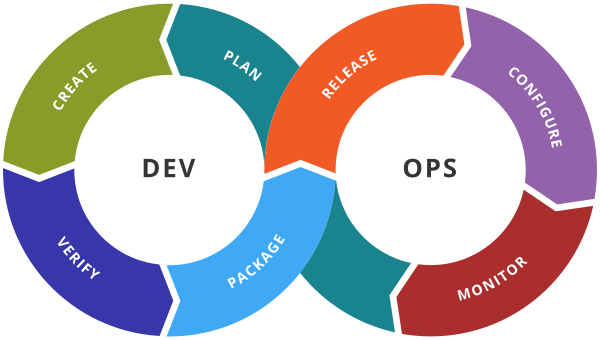
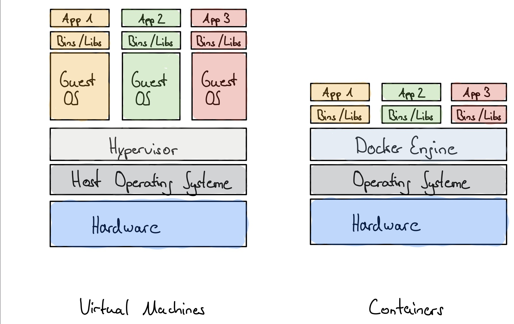
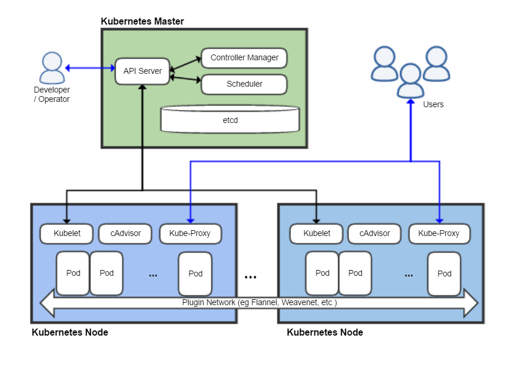

DevOps & Best Practices
DevOps brings development and operations together around a shared goal: delivering software quickly, reliably and repeatedly. This course covers the core building blocks of a DevOps toolchain — containerization, infrastructure automation and container orchestration — through six hands-on labs.


- Lab 1 – Docker: containerizing applications
- Lab 2 – Ansible: setting up the environment
- Lab 3 – Ansible: playbooks and handlers
- Lab 4 – Ansible: dynamic inventory
- Lab 5 – Kubernetes: Pods, Deployments and Services
- Lab 6 – Kubernetes: Ingress, Secrets and Volumes
- Further reading
This page gives an overview of the labs. The full statements, step-by-step instructions and solutions are provided to students during the course.
Lab 1 – Docker: containerizing applications
“The most powerful tool we have as developers is automation.” — Scott Hanselman
Goals: understand images and containers, package applications with a Dockerfile, and run multi-container applications with Docker Compose.


Exercise 1 – Docker commands
Pull the Ubuntu image from Docker Hub, run a container in detached mode named after you, install an Apache
HTTP server inside it with docker exec, and use port mapping to reach the server through port 80 of the
host. Finally, inspect the container to find its IP address.
docker pull ubuntu
docker images
docker run -dit -p 80:80 --name my-container ubuntu
docker exec -it my-container apt-get update
docker exec -it my-container apt-get install apache2
docker exec -it my-container service apache2 start
curl localhost:80
docker inspect my-container | grep -i "IPAddress"Exercise 2 – Writing Dockerfiles
- Write a Dockerfile for the Guess application.
- Deploy a Flask web application that reads IoT sensor data from a CSV file and displays it on a web page,
then describe it with a
docker-composefile. - Deploy the Spring Boot application
spring-guides/gs-spring-bootin three ways: locally, with a Dockerfile, and withdocker-composetogether with a MySQL database.
Exercises 3 and 4 – Sharing and visualizing
- Publish the image of the Flask application on Docker Hub.
- Challenge: display the sensor data in a Grafana dashboard, itself deployed in a container.
Takeaway: an image is a reproducible package of an application and its dependencies; a container is a running instance of it.
Lab 2 – Ansible: setting up the environment
Goals: build a small lab with one Ansible control node and two managed nodes
(node1, node2), and check that Ansible can reach them.
Main steps
- Network: Ubuntu Server virtual machines on VirtualBox (bridged network); make sure each machine has its own IP address and regenerate the MAC address of cloned machines.
- Host names and name resolution: rename the machines (
ansible-control,node1,node2) and configure/etc/hosts. - SSH: prepare SSH access on the managed nodes, test it from the control node.
- Ansible: install Ansible on the control node, test the connection with a password
(
sshpass), then switch to key-based authentication. - Inventory: create a clean inventory without passwords and run an ad-hoc
ping.
# inventory.ini
[nodes]
node1 ansible_host=node1
node2 ansible_host=node2
[nodes:vars]
ansible_user=ubuntu
ansible_become=true
$ ansible-inventory -i inventory.ini --list
$ ansible -i inventory.ini nodes -m pingLightweight variant – nodes in Docker containers
The virtual machines are replaced by Docker containers driven from Ubuntu on WSL2: install WSL2 and Docker, start a container running an SSH server as an Ansible node, test SSH from WSL, then create the Ansible project and its inventory. The variant also discusses what happens to the data when a container is stopped or removed, and how to keep it with a volume.
Takeaway: Ansible is agentless: it only needs SSH access and Python on the managed nodes.
Lab 3 – Ansible: playbooks and handlers
Goals: structure a minimal YAML playbook, install a package and manage a service, and learn the
basics of debugging with --check and verbosity levels.
Playbooks
- Run and analyze a series of playbooks: run a command on a node, run several plays on different groups of hosts (stop the web services, shut down the databases, restart the servers, then start them again in order).
- Write a minimal playbook that copies a file using variables, then extend it step by step.
- Try the playbooks in dry-run mode (
--check) and with increasing verbosity (-v,-vvv).
Handlers and notifications
Use notify and handlers to trigger an action only when a task has actually changed
something, and run the playbook twice to check that it is idempotent.
---
- name: Lab 3 - Handlers
hosts: nodes
become: false
tasks:
- name: Add an application setting
ansible.builtin.lineinfile:
path: /home/ansible/app.conf
line: "FEATURE_X=true"
create: true
notify: Apply configuration
handlers:
- name: Apply configuration
ansible.builtin.command:
cmd: echo "Configuration applied" >> /home/ansible/handler.logTakeaway: a playbook describes a desired state; running it again must not change a system that is already in that state.
Lab 4 – Ansible: dynamic inventory
Goals: replace the static inventory with a script. Ansible runs the script, the script returns JSON, and Ansible interprets this JSON as an inventory.
- Write a Python script (
inventory_docker.py) that lists the running Docker containers (docker ps), keeps those exposing an SSH port, and builds thenodesgroup with the connection variables of each host (_meta.hostvars). - Make it executable and check the result with
ansible-inventory --graph. - Use it with ad-hoc commands and playbooks, exactly like a static inventory.
chmod +x inventory_docker.py
ansible-inventory -i inventory_docker.py --graph
ansible -i inventory_docker.py nodes -m ping
ansible-playbook -i inventory_docker.py test.ymlTakeaway: in dynamic environments (containers, cloud), the inventory is discovered, not written by hand.
Lab 5 – Kubernetes: Pods, Deployments and Services


Goals: deploy, scale, expose and update an application on a local Kubernetes cluster.
- Setup: install Minikube and
kubectl, start the cluster, preload the images and create a dedicated namespace. - Architecture: desired state vs. observed state; control plane and worker nodes; the resources used in the lab.
- Pods: write a Pod manifest, create the Pod and inspect it.
- Deployments: deploy several replicas, delete a Pod and observe how Kubernetes recreates it (self-healing through the ReplicaSet).
- Scaling: change the number of replicas declaratively (manifest) and imperatively
(
kubectl scale). - Services: ClusterIP, NodePort and LoadBalancer; how
port,targetPortandnodePortfit together. - Rolling updates: deploy a new version of the image, follow the rollout, then roll back.
- Final exercise: deploy a complete “Hello Kubernetes” application.
apiVersion: apps/v1
kind: Deployment
metadata:
name: web
namespace: atelier
spec:
replicas: 3
selector:
matchLabels: { app: web }
template:
metadata:
labels: { app: web }
spec:
containers:
- name: web-ctr
image: nigelpoulton/k8sbook:1.0
ports:
- containerPort: 8080
$ kubectl apply -f deploy.yml
$ kubectl scale deployment/web --replicas=5 -n atelier
$ kubectl rollout status deployment/web -n atelier
$ kubectl rollout undo deployment/web -n atelierTakeaway: you declare what you want; Kubernetes continuously reconciles the cluster with that declaration.
Lab 6 – Kubernetes: Ingress, Secrets and Volumes
Goals: expose several applications through a single entry point, handle sensitive data and keep data beyond the life of a Pod.
Ingress – HTTP routing
Enable the Ingress add-on of Minikube, deploy two applications (“blue” and “red”), and route the traffic by path, then by host name. A last exercise adds HTTPS with a TLS secret.
apiVersion: networking.k8s.io/v1
kind: Ingress
metadata:
name: ingress-atelier
annotations:
nginx.ingress.kubernetes.io/use-regex: "true"
nginx.ingress.kubernetes.io/rewrite-target: /$2
spec:
ingressClassName: nginx
rules:
- host: 127.0.0.1.nip.io
http:
paths:
- path: /blue(/|$)(.*)
pathType: ImplementationSpecific
backend:
service: { name: svc-blue, port: { number: 80 } }
- path: /red(/|$)(.*)
pathType: ImplementationSpecific
backend:
service: { name: svc-red, port: { number: 80 } }Secrets
Types of Secrets; creation from the command line and from a manifest; use of a Secret as environment variables or as mounted files; difference with a ConfigMap.
kubectl create secret generic db-credentials \
--from-literal=username=admin \
--from-literal=password=MyPassword123Volumes
PersistentVolumes and PersistentVolumeClaims: store data in a volume, check that it survives the deletion of the Pod, then run a PostgreSQL database with persistent storage.
Wrap-up
Deploy a complete web stack combining a Deployment, a Service, an Ingress, a Secret, a ConfigMap and a persistent volume.
Takeaway: configuration, secrets and data are kept outside the container image, so that the same image can run in every environment.
Further reading
- Gene Kim, Jez Humble, Patrick Debois and John Willis, The DevOps Handbook, IT Revolution, 2016.
- Jez Humble and David Farley, Continuous Delivery, Addison-Wesley, 2010.
- Brendan Burns, Joe Beda, Kelsey Hightower and Lachlan Evenson, Kubernetes: Up and Running, 3rd ed., O'Reilly, 2022.
- Jeff Geerling, Ansible for DevOps, Leanpub.
- Official documentation: Docker, Ansible, Kubernetes.